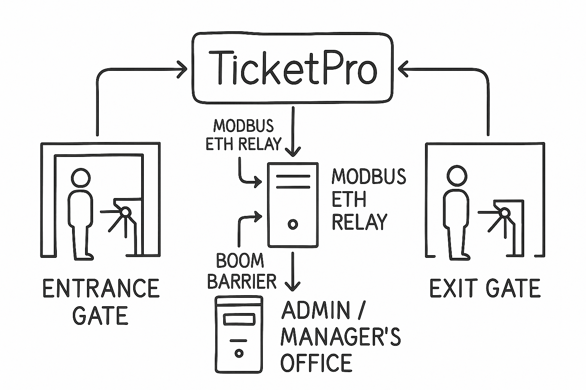

Welcome to TicketPro
A smart vehicle management software built to monitor vehicle entry and exit at entities, control gate barriers, issue digital receipts, and track operator shifts across multiple locations.
Improve transparency, reduce human error, and gain real-time insights—all in one place.
Installation & Setup
Our experienced technical team will handle the complete installation and deployment of TicketPro on your preferred server infrastructure. This includes setting up the backend environment, configuring the software, and ensuring seamless integration with your entry and exit systems.
You won’t need to worry about any technical complexities — from database configuration to barrier control setup, everything will be handled efficiently by our professionals. We’ll also ensure the system is tested, secured, and ready for operational use.
Usage Guide
Login with your credentials. Navigate using the hamburger menu. Entry and Exit officers use the respective dashboards to admit or release vehicles. Managers and Admins access broader features like announcements, settings, backups, and full reports.
Operators can print receipts, open barriers (when configured), and review daily activity logs.
User Roles
Administrator
Full control including entity creation, user transfer, and backups.
Manager
Oversees operations in a specific entity, approves shifts, views statistics and reports.
Park Officer
Handles entry/exit gates with scoped access to ticketing and monitoring only.
Features
- üé´ Vehicle ticket issuance and receipts
- ⏱ Shift tracking and reporting
- üîê Role-based access with entity-specific data
- üìä Sales summaries, daily logs, and history
- üì¢ Announcement system for staff
- üõ† System maintenance: delete, backup, and restore
- üìÅ Supports PDF export of reports and settings
Entrance & Exit Layout Plan
This 3D visual illustration shows the proposed layout for how TicketPro will operate at the entrance and exit gate, including cubicle placement,barrier positioning along with a schematic overview of system communication between gates and the admin office..
Entrance Gate Layout
Exit Gate Layout

System Communication Diagram
Download Documentation PDF
You can download the complete documentation as a PDF file for offline use.
Download PDFIf you don’t see the video, click here to view or download.
Frequently Asked Questions
Yes, it works seamlessly on any local web server like XAMPP or WAMP.
Yes, you can export and restore databases directly from the system maintenance section.
Managers and Admins can update ticket pricing from the Settings page based on entity configurations.
Contact
üìß Email: michellenetruce@gmail.comüìû Phone: +234 813 970 9869